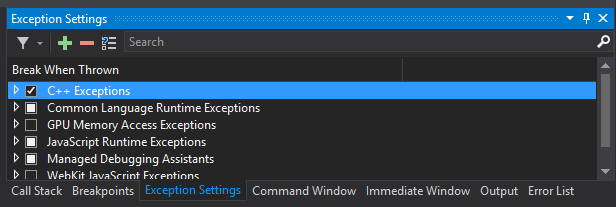

FAQ#
General#
- Unreal editor is slow when it is not the active window
- My mouse disappears in Unreal
- Where is the setting file and how do I modify it?
- How do I arm my drone?
- When making API call I get error
- I'm getting Eigen not found error when compiling Unreal project.
- Something went wrong. How do I debug?
- What do the colors mean in the Segmentation View?
- Unreal 4.xx doesn't look as good as 4.yy
- Can I use an XBox controller to fly?
- Can I build a hexacopter with AirSim?
- How do I use AirSim with multiple vehicles?
- What computer do you need?
- How do I report issues?
General#
Unreal editor is slow when it is not the active window#
Go to Edit/Editor Preferences, select "All Settings" and type "CPU" in the search box. It should find the setting titled "Use Less CPU when in Background", and you want to uncheck this checkbox.
My mouse disappears in Unreal#
Yes, Unreal steals the mouse, and we don't draw one. So to get your mouse back just use Alt+TAB to switch to a different window. To avoid this entirely, go to Project settings >in Unreal Editor, go to Input tab and disable all settings for mouse capture.
Where is the setting file and how do I modify it?#
AirSim will create empty settings file at
~/Documents/AirSim/settings.json. You can view the available settings options.
How do I arm my drone?#
If you're using simple_flight, your vehicle is already armed and ready to fly. For PX4 you can arm by holding both sticks on remote control down and to the center.
When making API call I get error#
If you are getting this error,
its probably due to upgraded version of tornado package with version > 5.0 in Python that conflicts withTypeError: unsupported operand type(s) for *: 'AsyncIOLoop' and 'float'msgpack-rpc-pythonwhich requires tornado package < 5.0. To fix this >you can update the package like this:But this might break something (for example, PyTorch 0.4+) because it will uninstall newer tornado and re-install older one. To avoid this you should create new conda >environment.pip install --upgrade msgpack-rpc-python
I'm getting Eigen not found error when compiling Unreal project.#
This is most likely because AirSim wasn't built and Plugin folder was copied in Unreal project folder. To fix this make sure you build AirSim first (run >
build.cmdin Windows).
Something went wrong. How do I debug?#
First turn on C++ exceptions from the Exceptions window:

and copy the stack trace of all exceptions you see there during execution that look relevant (for example, there might be an initial exception from VSPerf140 that you can >ignore) then paste these call stacks into a new AirSim GitHub issue, thanks.
What do the colors mean in the Segmentation View?#
See Camera Views for information on the camera views and how to change them.
Unreal 4.xx doesn't look as good as 4.yy#
Unreal 4.15 added the ability for Foliage LOD dithering to be disabled on a case-by-case basis by unchecking the
Dithered LOD Transitioncheckbox in the foliage materials. >Note that all materials used on all LODs need to have the checkbox checked in order for dithered LOD transitions to work. When checked the transition of generated foliage will >be a lot smoother and will look better than 4.14.
Can I use an XBox controller to fly?#
See XBox controller for details.
Can I build a hexacopter with AirSim?#
How do I use AirSim with multiple vehicles?#
Here is multi-vehicle setup guide.
What computer do you need?#
It depends on how big your Unreal Environment is. The Blocks environment that comes with AirSim is very basic and works on typical laptops. The Modular Neighborhood Pack that we use ourselves for research requires GPUs with at least 4GB of RAM. The Open World environment needs GPU with 8GB RAM. Our typical development machines have 32GB of RAM and NVIDIA TitanX and a fast hard drive.
How do I report issues?#
It's a good idea to include your configuration like below. If you can also include logs, that could also expedite the investigation.
Operating System: Windows 10 64bit CPU: Intel Core i7 GPU: Nvidia GTX 1080 RAM: 32 GB Flight Controller: Pixhawk v2 Remote Control: FutabaIf you have modified the default
~/Document/AirSim/settings.json, please include your settings also.If you are using PX4 then try to capture log from MavLink or PX4.
File an issue through GitHub Issues.